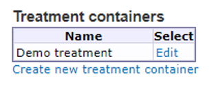

Chapter 9 Create new treatment
BASS is designed to allow you to conduct mental healthcare and psychological studies through online channels. The main feature to achieve this in BASS, is the treatment.
A treatment is built by combining treatment modules into sections. A module is in essence a website, contained within the framework that BASS provides. This allows you the flexibility to build your treatment according to your organization’s needs and wishes.
Treatments are accessed by the Treatment containers option in the main menu.
The first thing you will see in this view is a table showing you all the existing treatment containers in the current project. If no treatment containers have been created, the table will be empty.
You can edit existing treatment containers by clicking the Edit link in the column to the right.
To create new treatment containers, click the Create new treatment container link below the table.

Important note: Treatment containers in BASS are frameworks that contain all the other components that make up a treatment, such as treatment modules.
9.1 A typical treatment structure
A treatment container is the abstract structure that holds all the content of a treatment or treatment series. A typical treatment is built up by several modules, often arranged in a specific order. A typical module consits of:
- One module text
- (0 - several) worksheets
- One homework
Whenever you create a new treatment, it is advisable to plan the structure from the beginning, so as to get a sense of both the magnitude of the sub-content and the flow of the treatment.
9.2 Creating a treatment container
In the Treatment containers view, click the Create new treatment container link below the table. This opens the editing view of the new treatment container. You can close the container by clicking Close at the top to return to the table listing all existing treatment containers. Don’t forget to save any changes first, by clicking the Save button.
Give your treatment container a name in the Name box, and save it.
You can now add treatments, modules and specific contents such as texts, worksheets and homeworks to your treatment container, by using the dropdown menu at the bottom of the page.
9.3 Creating a treatment
Regardless whether you just created a new treatment container or chose to edit an existing one, you can add a new treatment to it, by selecting Create new… [Treatment] in the dropdown menu ar the bottom of the view. This opens the editing view of the new treatment. You can close the treatment by clicking Close at the top of the view to return to the corresponding treatment container. Don’t forget to save any changes before doing so, by clicking the Save button.
Give your treatment a name, by typing it into the Name box and save it.
Before adding in modules with content to the treatment, there are a few Treatment settings to consider.
9.3.1 Available
By checking this box, the treatment can be assigned to participants.
Important note: Any participants assigned to the treatment will automatically and continuously have access to all its content unless you limit the access with the settings below.
9.3.2 Acces has to be enabled/time-limited access
If the Access has to be enabled box is checked, the treatment has to be manually activated for a participant before its content becomes available to that participant.
By alos checking the Time-limited access box, you can specify a time window for a participant when the treatment is active and its content available. This time window is specified in the participant view, under the Treatments tab.
9.3.3 Treatment length
If the treatment is to be available for a certain numbre of days after it has been activated, you can set that value in the Treatment length box. You can always override/customize the treatment availability for a specific paricipant in the Treatment access tab of the participant.
9.3.4 Manual model access
Check this box to be able to activate each module in the treatment separately for a participant. This is useful for when you want to make sure participants are finished with one module before starting with the next one.
9.3.5 Participants can send messages
Checking this box makes it possible for participants to send messages to their therapists during an active treatment, by using the built-in messaging feature in BASS.
9.3.6 Therapists can send messages
Checking this box makes it possible for therapists to send messages to their participants during an active treatment, by using the built-in messaging feature in BASS.
9.3.7 Use homework review
Checking this box has two implications:
- First, a participant can choose to either save a homework (to be able to work on it later), or send it to the therapist (which marks it as finished and locks it, disabling further editing).
- Second, an icon will be displayed i the Homework column of the Participant search view, that flags whenever a participant has submitted a finished homework and thus notifies the therapists of the fact at a glance.
9.3.8 Treatment modules
To add a module to a treatment, use the Add modules dropdown menu at the bottom of the treatment view. The dropdown menu will show all existing moduels of the corresponding treatment container. To create a new module, close the treatment to return to the treatment container view and click the Create new… [Module] from the dropdown menu at the bottom of the view.
To remove a module for the treatment, click Remove on the right hand side of the module name.
To change the order of modules in a treatment, use the Move up link in the table.
To set which modules are active/available from the start of the treatment (typically a welcome module and the first module in a treatment), check the corresponding boxes in the Auto access column.